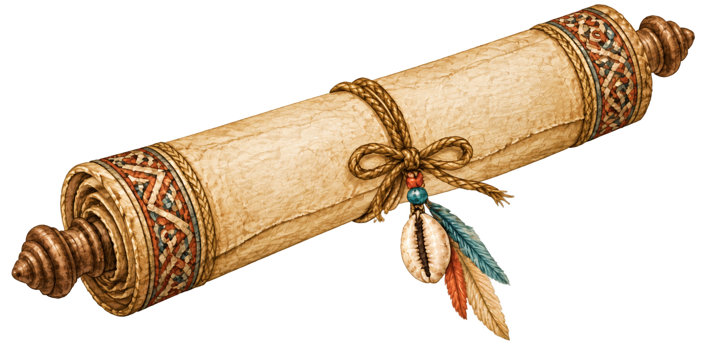
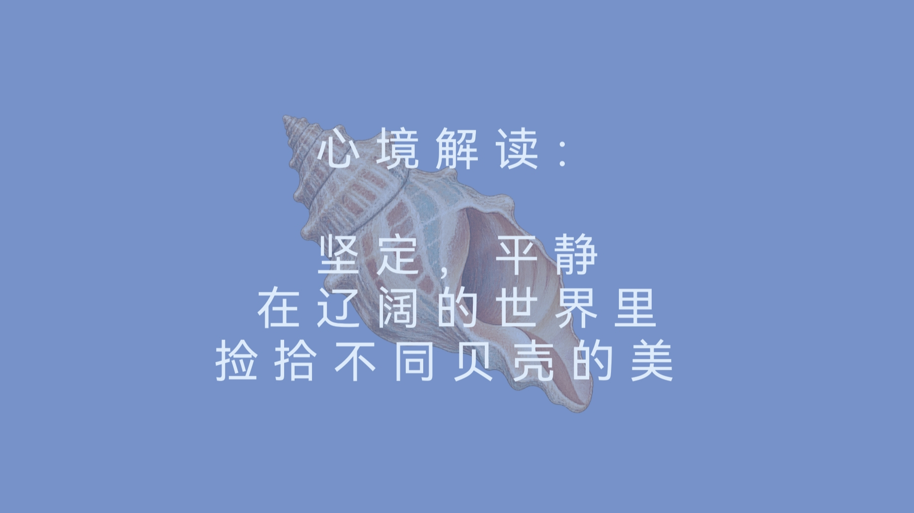
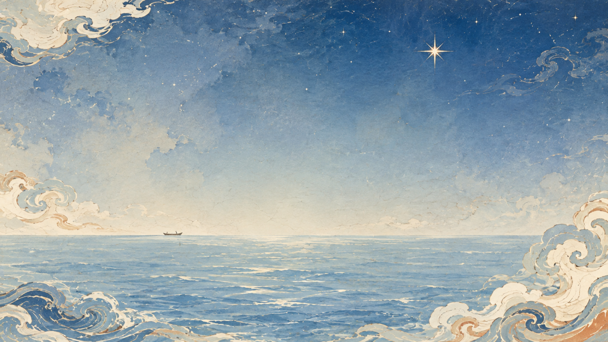
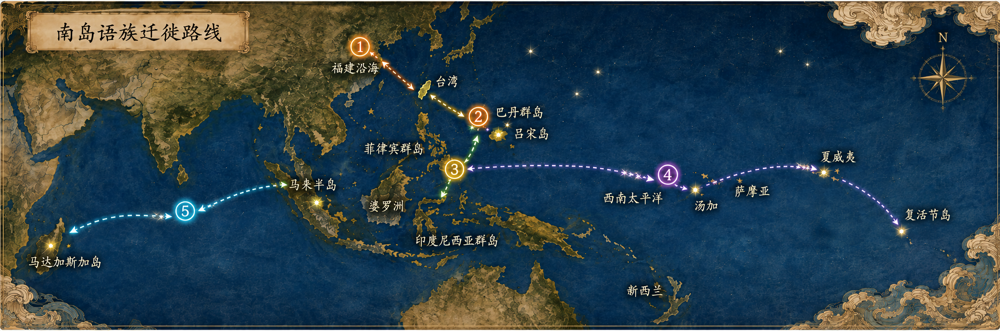
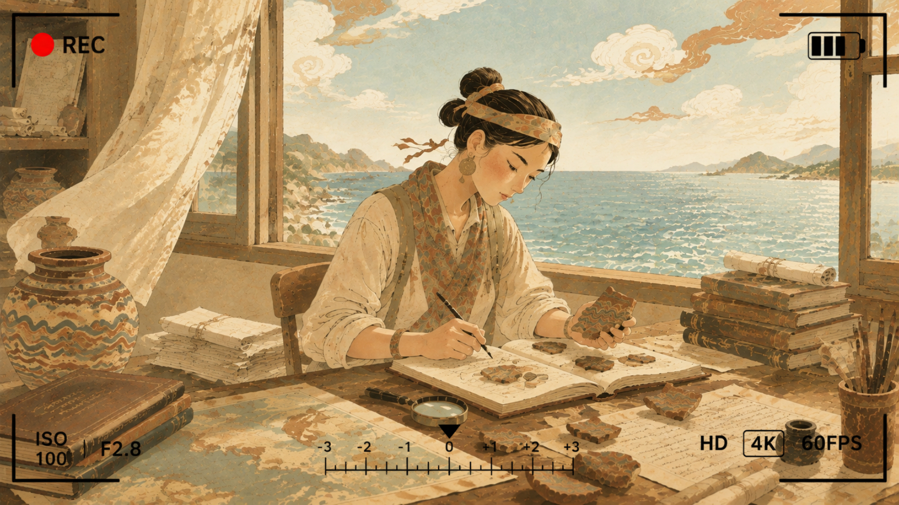

解锁纪念物：一份神秘的坐标图



南岛语族的海洋迁徙：
约距今5000-3500年：福建沿海新石器人群携带农业与陶器文化，跨越台湾海峡进入台湾岛。
约公元前3000年：台湾原住民群体渡海至菲律宾北部的巴丹群岛与吕宋岛。
约公元前2500-1000年：迁徙群体自吕宋分支，向南覆盖菲律宾全境、婆罗洲与印度尼西亚群岛；另一支沿马来半岛进入东南亚大陆沿海。
约公元前1000年起：携带拉皮塔文化陶器组合的南岛语族分支，开始向西南太平洋远距离深海拓殖，最终抵达波利尼西亚全域。
约公元500-800年：另一支迁徙群体沿印度洋方向持续西进，最终抵达非洲东岸外海的马达加斯加岛。

